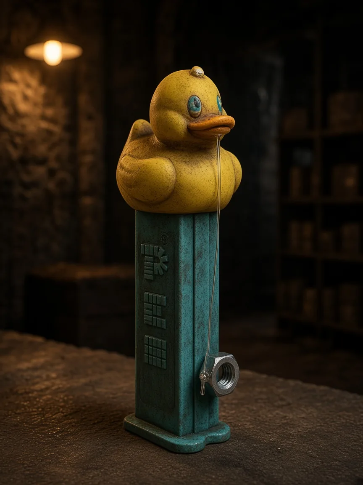
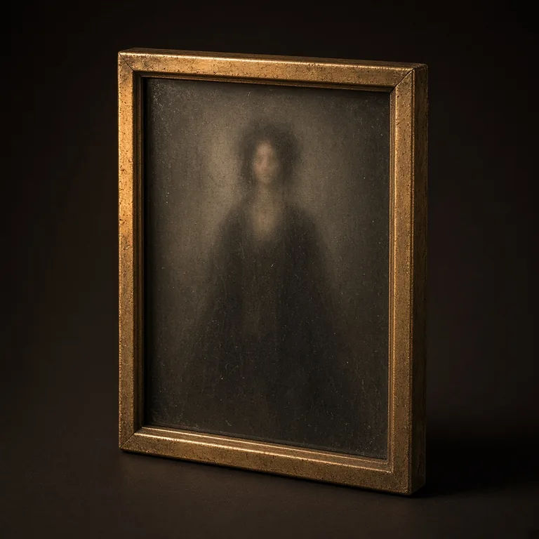
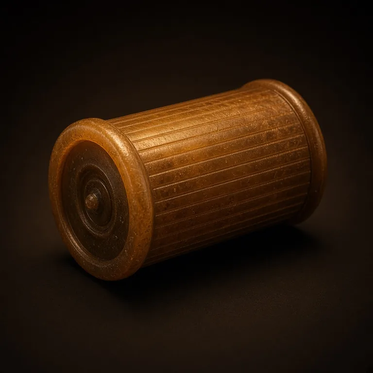
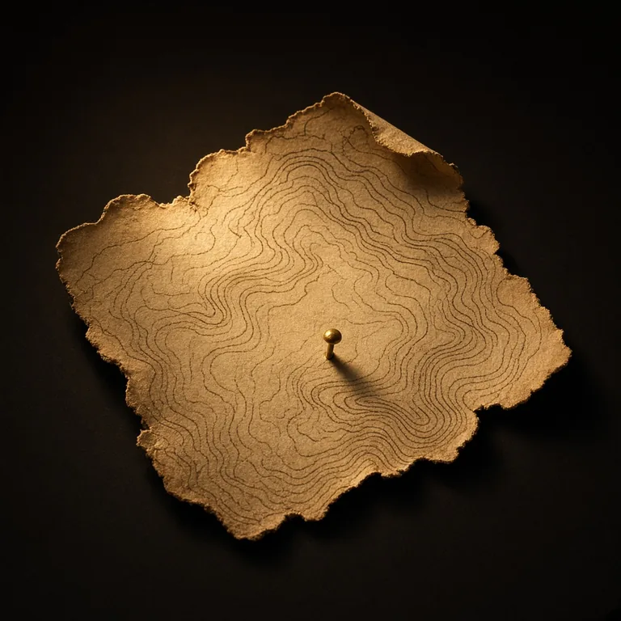
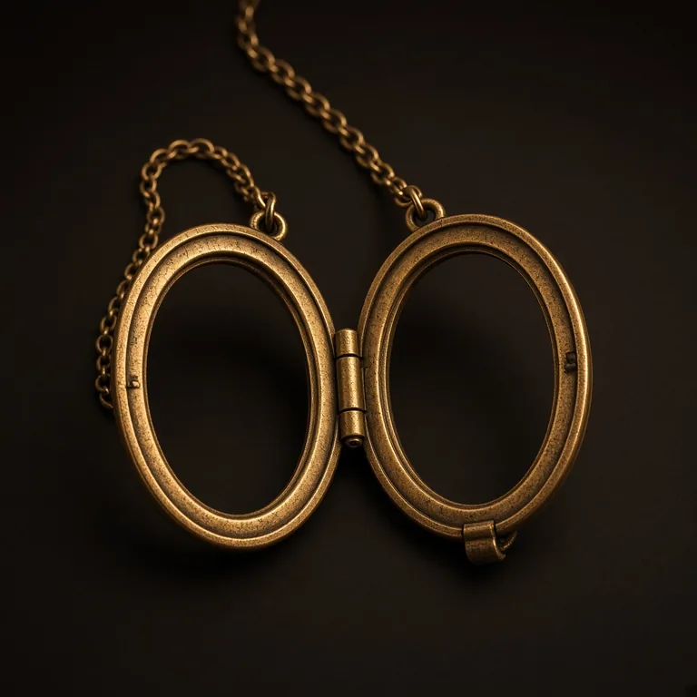
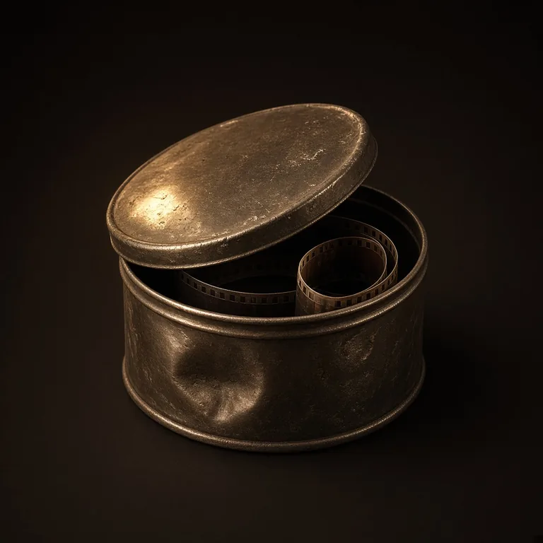
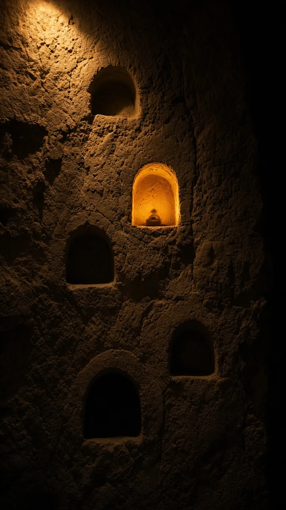
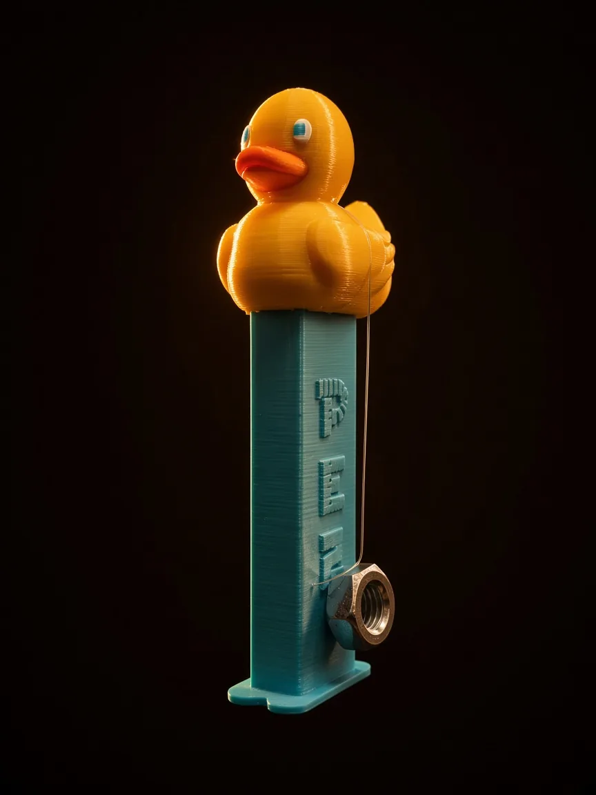
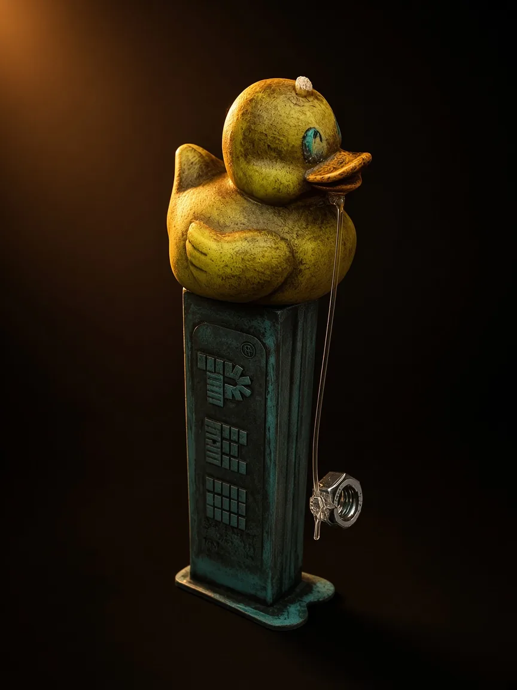
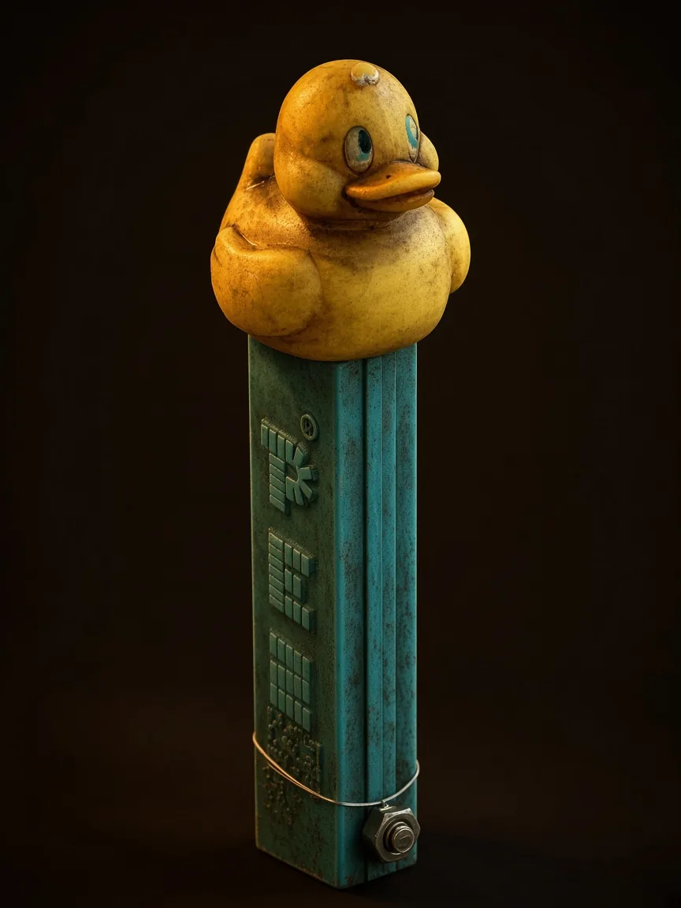

A private vault for the things you keep
Up there, everything is forgotten. Down here, what you keep, remains.
Relic turns each memory into an object in a lamp-lit vault: a folded letter, a glass plate, an echo shell. Write it, photograph it, say it out loud. Then it stays yours.
Android · coming to Google Play
No ads. No analytics SDKs. Nothing sold. Export it all, any day.

How it works
Every memory becomes a relic
You are the Keeper. Your account is a private vault, a shaft lit by lamps. Each month is a level, and the further back a memory sits, the deeper it goes.
-
01
What’s in your hand?
Choose words, a voice, or photos. Hold the mic and speak, and your words appear in the letter. Then add when it happened, where, and who was there, one question at a time. Pick a weight between a feather and a stone, and a lamp colour.
-
02
Press and hold the seal
A wax seal, held for a little over a second. Your phone ticks harder as it fills. The relic drops into the vault and finds its niche.
-
03
Something surfaces
Relic can raise a relic from a past year, on the day it happened. Open it and it plays back the way you kept it: the letter unfolds, the glass plate develops out of the dark.
Vessels
Six kinds of object
What you keep decides what it looks like. A relic with several kinds of content takes the form of the richest one: photos first, then voice, then words.
-
Folded letter
Words. It unfolds, and the ink writes itself back on.
-

Glass plate
Up to five photos per relic. The plate develops out of the dark.
-

Echo shell
A voice recording up to a minute long. The grooves light as it plays.
-

Map shard
A place, by name. A pin glows on the fragment.
-

Locket
The people who were there. It opens on their names.
-

Reel canister
A link to a video, kept as a link. Relic doesn’t store video files.

More rooms in the vault
Most niches are still dark
- The Ledger
- A year as a wall of tiny lamps, one for every day. Brighter where you kept more. Tap a day to open what you kept on it.
- Sealed relics
- Lock a relic until a date you choose. A letter to whoever you are by then.
- Share card
- A 4:5 picture of a relic on stone or paper, drawn on your phone. It goes where you send it and nowhere else.
- Widgets
- Put a relic on your home screen, so something you kept finds you.
- Reminders
- An optional daily nudge at the hour you pick, scheduled on your phone. Off until you turn it on.
The duck
It weathers with your vault
The duck is your companion down here. It starts clean. At 30 relics the stem gathers patina. At 365 it looks like it has been in the vault a long while. There is no streak to protect and nothing to lose. It only ever ages.



Private by design
Nothing here is for anyone else
A memory app should be the last place your memories get mined. Here is what Relic does and doesn’t do with yours.
- No adsRelic shows none and carries no advertising SDKs.
- No trackingNo analytics or tracking SDKs. We don’t build a profile of you.
- Nothing sold, nothing fed to AIYour relics are not sold, not shared for advertising, and not processed by AI.
- Yours to takeExport the whole vault as a ZIP: readable JSON, plus your original photos and voice recordings.
- Yours to endRelease the vault from inside the app and your account, relics and media files are deleted permanently.
- One honest caveatDictation uses Android’s speech service. If your phone can’t do it on the device, Android may send the audio to Google to turn it into text. The privacy policy has the detail.
Vault door
Bolt the door
Switch on the vault door and Relic asks for your fingerprint, face or screen lock every time it opens.
The free vault
What the free vault holds
- 5
- relics a day
- 500 MB
- of photos and voice
- 5
- photos in each relic
- 60 s
- of voice in each relic
Words take almost no space, so the limit you’ll feel first is the daily one. A larger premium vault is planned. It isn’t for sale yet, and there is a waitlist inside the app if you want to hear when it opens.